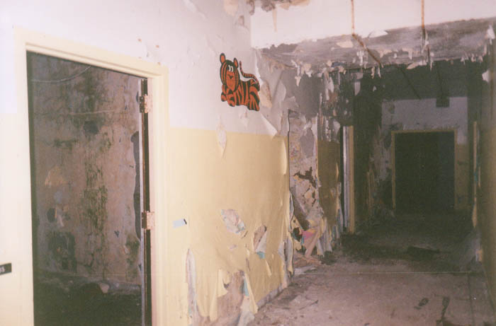
Upstairs you find the creepiest patient rooms of all: the ones where the kids lived. Broadview took a lot of juveniles who became wards of the state as a result of abuse or severe neglect, treating them for their developmental and psychological problems while providing them with a reasonably stable place to live. The 1980s and deinstitutionalization put an end to much of this kind of state-run assistance.
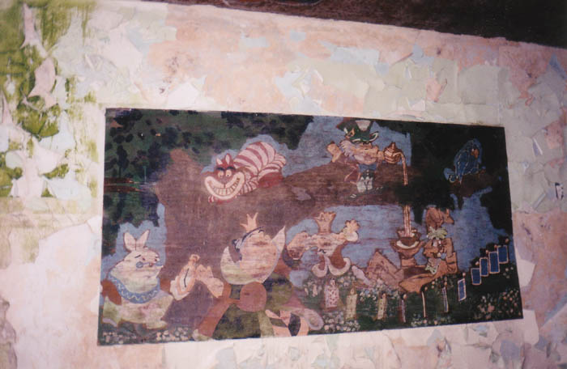
The walls of the childrens' wards have cartoon murals painted on them, presumably by the kids themselves. Above you can see an Alice in Wonderland-themed painting; below is one with Charlie Brown, Jughead, Lucy, Clifford, Donald Duck, and a scary-eyed Ronald McDonald.
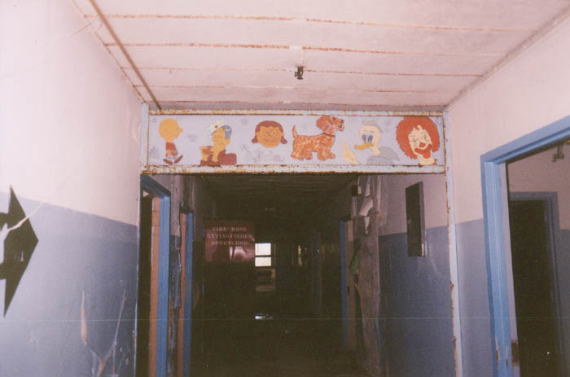
Although some of the murals are very good, a lot of them are just a little bit off in some subtly disturbing way. The one below shows a mouse being swooped down on by an owl. The mouse is saying, "Please don't eat me Mr. Owl." The thought of this little cartoon scene overlooking the empty halls of this place year after year is a little bit freaky to me.
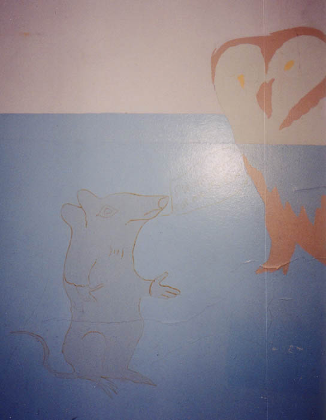
Inside the kids' rooms there are still signs that they were there: toys, stuffed animals, art supplies, Charlie Brown drapes. Pictured below is a locker in one of the rooms with a sad little headless teddy bear inside.
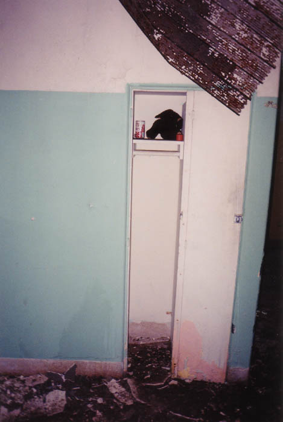
And then there's this mirror, with STAND TALL across the top. A lot of the stuff is reminiscent of the halls of an elementary school, except the kids who lived here had been through horrible experiences and had no homes to go back to.
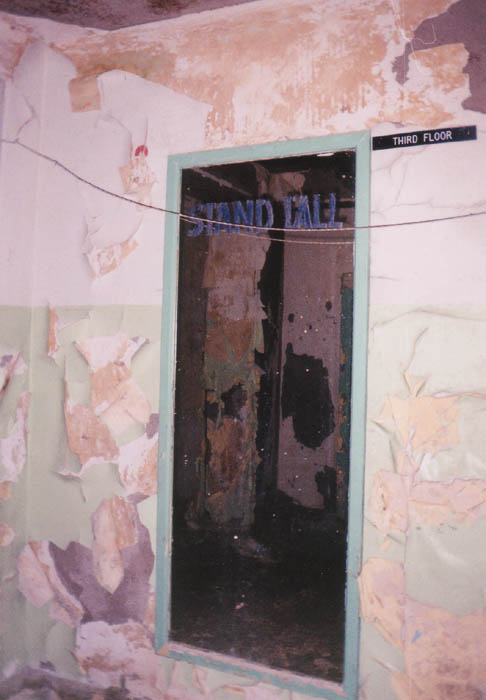
Many of the rooms throughout the building are barren and indistinguishable. The large rooms at the ends of the halls were apparently multipurpose rooms; on the kids' levels they were used as playrooms.
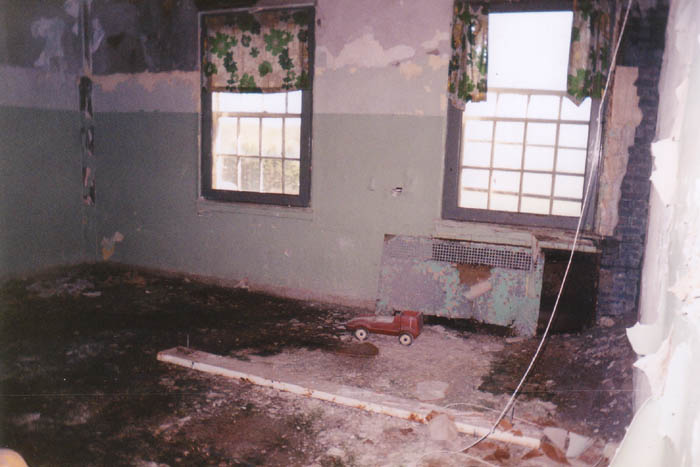
If that's not sad enough, how about the fact that the third floor features its own maternity ward. What this was used for I have no clue--unless it's the obvious, which would be delivering patients' babies.
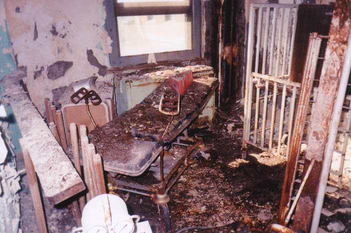
It makes you wonder how commonplace pregnancies and births were at this hospital, which was really more for the treatment of psychological illness than physical ailment--at least after the Veteran's Administration was through with it. Although they did have adult patients, the fact that it was located up here is possibly significant because a lot of the children at Broadview were victims of sexual abuse and may have had to deliver. Fun thoughts.
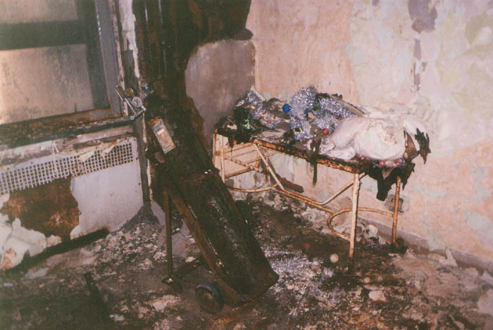
We made it onto the roof but didn't spend much time up there because we were afraid of being seen. The roof was divided into three parts, corresponding with the three sections of the hospital, and the middle section was just a little too high to be safe in the daytime.
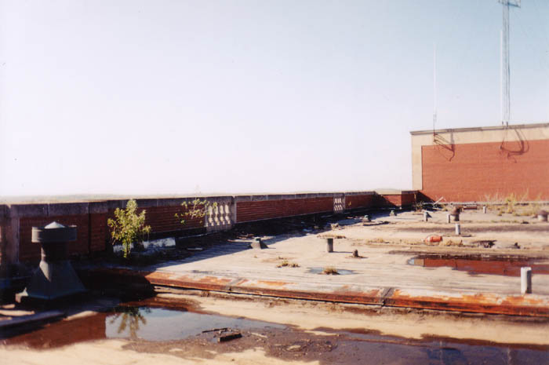
The only evidence of recent activity at the Center was the material left behind by asbestos removers who presumably did most of their work in the north wing of the building. They left some equipment behind, as well as a lot of spraypainted notes like "LOCKED - GET KEY" on any door they couldn't open. At the point where the renovated wing begins, they sealed everything with plastic.
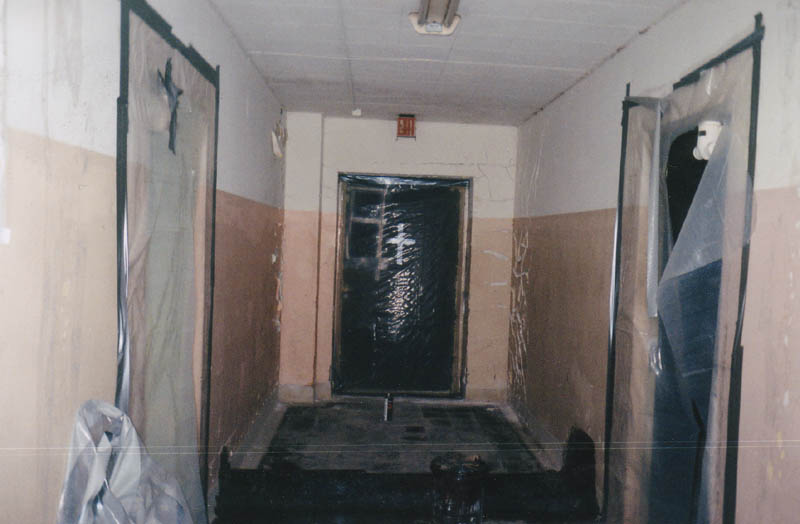
To keep going and take a look at the patient files we discovered inside the Broadview Developmental Center, click below.
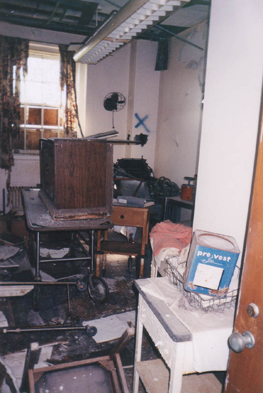
CONTINUE...
Back